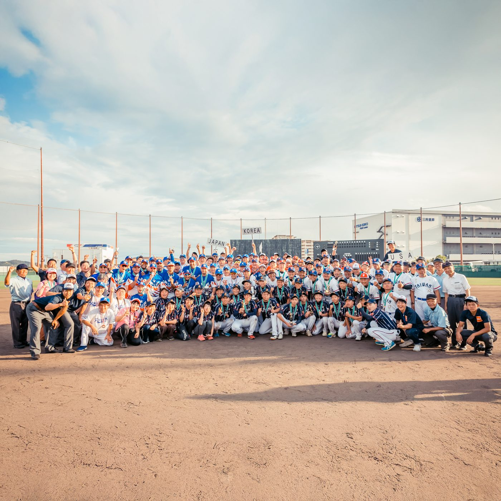
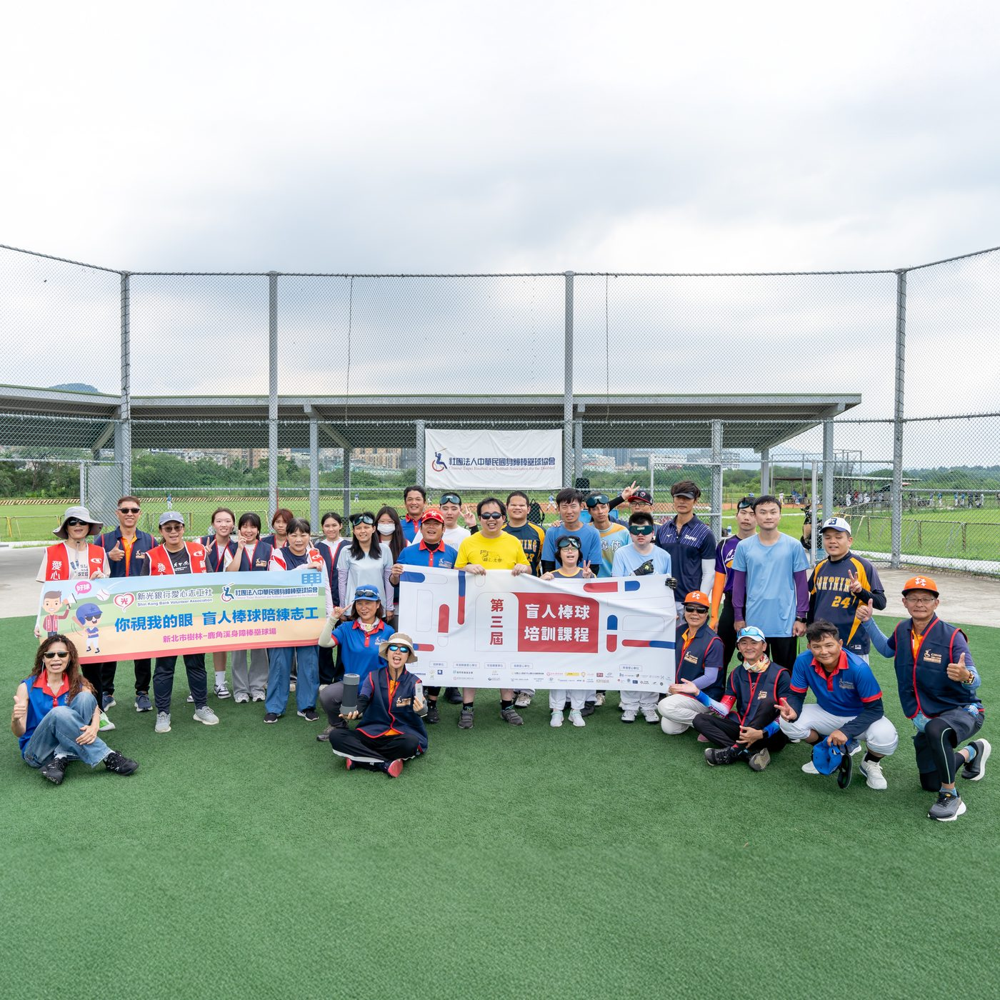

01我的故事
世界身體障害者野球大會參賽計畫
日本身障棒球聯盟每四年舉辦一次「世界身體障害者野球大會」，即將於2026年迎來第六屆賽事。本會將組隊代表臺灣參賽，並與美國、韓國、波多黎各等身障棒球強國同場競技，爭取最高榮耀。
本會積極籌備參賽事宜，期盼透過國際賽事參與，讓身障朋友能以國家代表之姿登上國際舞台，不僅為臺灣爭取榮譽，更讓選手感受「為國而戰」的尊嚴與自信。


推薦理由
對許多身心障礙者而言，棒球曾經是被迫放棄的夢想。然而，身障棒球讓他們有機會再次站上球場，在陽光下與隊友一起追逐小白球，重新找回運動的熱情與自信。這不只是運動，更是一段重新看見自我價值的旅程。
本計畫將選拔並培訓臺灣身心障礙棒球代表隊，參與 2026 年「世界身體障害者野球大賽」。透過國際賽事，選手們不僅能代表臺灣與各國好手同場競技，更能向世界展現臺灣身障運動員堅韌不屈的精神。
我們相信，身障運動不是福利，而是一項權利。支持這項計畫，不只是支持一場比賽，更是在支持一群努力突破限制、勇敢追夢的運動員。讓更多人看見他們的努力與可能，也讓「揮棒的權利」成為每一位身障朋友都能擁有的日常。